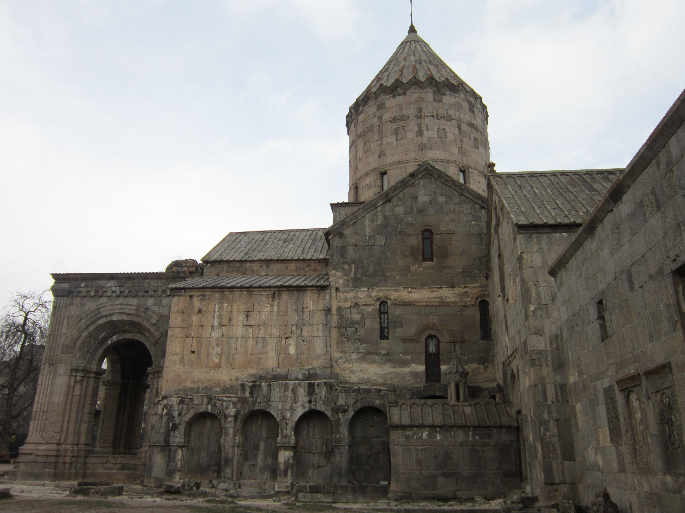
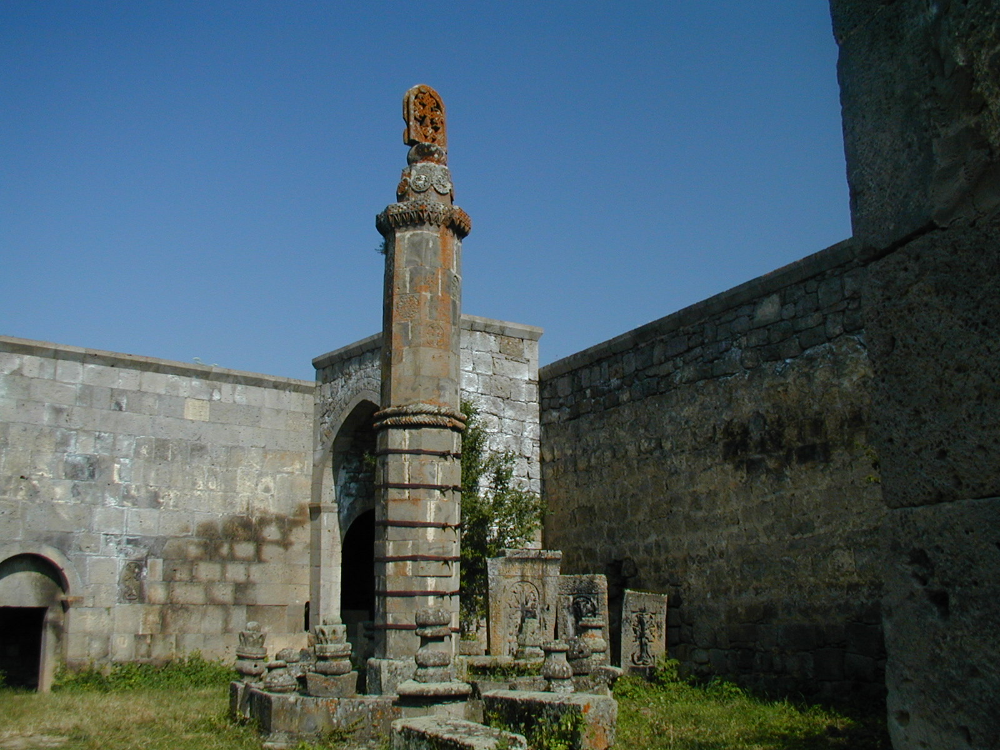
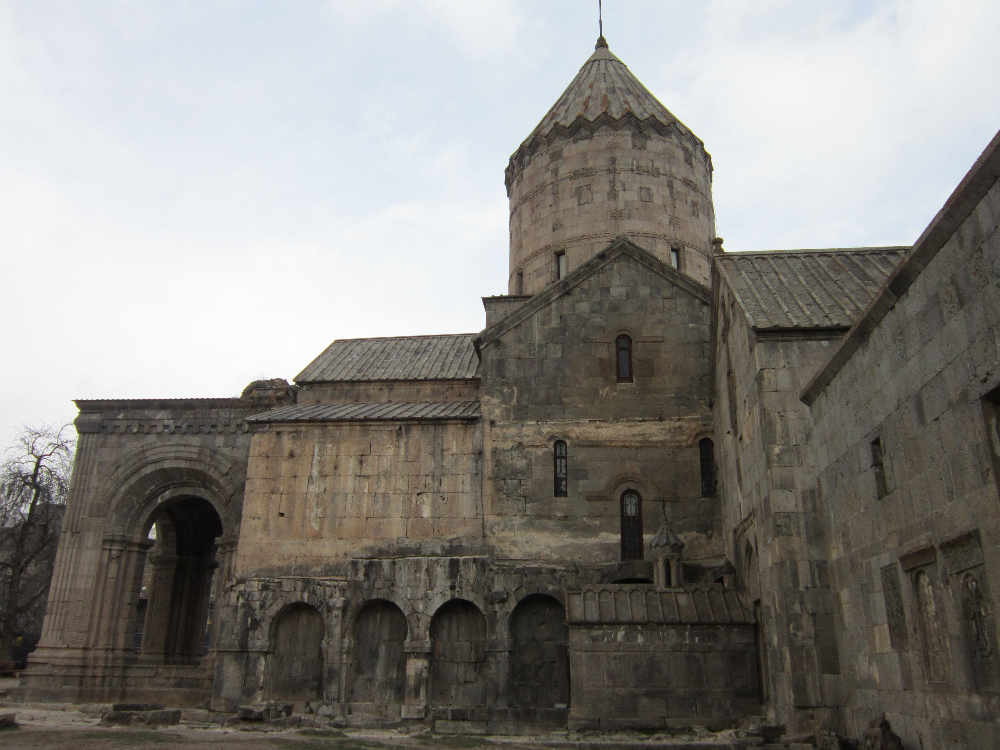
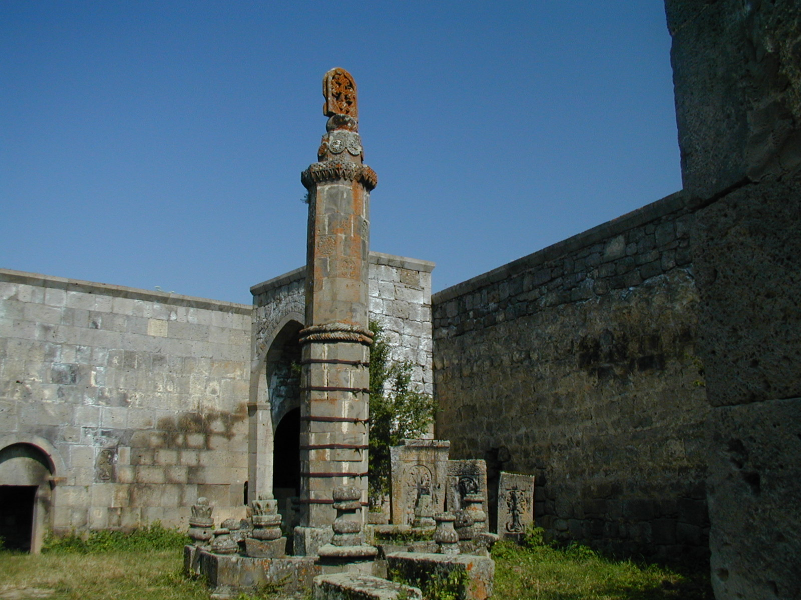

Татев
Татев (монастырь)
.jpg)
Татевский монастырь (арм. Տաթևի վանք) — армянский монастырский комплекс конца IX—начала X веков в Сюникской области Армении, в 20 км от города Горис. На протяжении столетий был духовным центром Сюника.
Является частью крупного туристического комплекса, в который также входят обитель отшельников Татевских пустынь, канатная дорога «Крылья Татева», природный мост, пещера Сатани Камурдж и много других достопримечательностей.
В 1995 году Татевский монастырь рассматривался на включение в список Всемирного наследия ЮНЕСКО.
Реставрация обители, восстановление её образовательного значения и возрождение жизни — главные цели программы «Возрождение Татева», частью которой является канатная дорога «Крылья Татева».
История
(Татев монастырь, Сюникская область, Армения )
Основан в 895—906 годах сюзереном Сюника Ашотом и его женой Шушан, а также князем Гегаркуника Григором Супаном II и князем Балка Дзагиком.
В X веке в обители проживало около тысячи человек. В XIII веке монастырь собирал налоги с 680 окрестных деревень.
Монастырь представлял собой один из важнейших центров науки и просвещения средневековой Армении. Несмотря на разрушение среднеазиатским завоевателем Тамерланом значительного количества армянских монастырей в конце XIV—начале XV веков, Татев сохранил свой статус крупного феодального центра. В 1373 году Ованесом Воротнеци в обители был основан Татевский университет, в течение полувека остававшийся единственным действующим университетом Восточной Армении. При университете развивалась татевская школа миниатюры.
В 1435 году обитель была сожжена конницей Шахруха, младшего сына и преемника Тимура.
27 апреля 1921 года на съезде в монастыре была провозглашена дашнакская Республика Горная Армения.
Монастырь сильно пострадал от землетрясения в 1931 году. В настоящее время на территории ведутся восстановительные и реставрационные работы. Монастырь открыт для посещения без ограничений.
Этимология названия
Есть две версии происхождения названия обители. Согласно одной из них, «Татев» переводится с армянского как «Даст крылья». Поговаривают, что, завершив работу, мастер-строитель встал на край ущелья, перекрестился, произнёс: «Огни, Сурб, та тэв» («Да ниспошлет Святой Дух крылья!»), — и бросился в бездну. Выросли у мастера крылья, он улетел, а построенный им монастырь назвали Татев.
Вторая версия связана с именем святого Евстатеоса (Евстафия), ученика апостола Фаддея, проповедовавшего христианство в Армении. В этих местах миссионер принял мученическую смерть, а в IV веке над его могилой был возведён храм, который освятил Григор Лусаворич (святой Григорий Просветитель).[источник не указан 581 день] Руины храма сохранились за крепостными стенами, неподалёку от входа в обитель.
Основные сооружения
.png)
Храм Сурб Погос-Петрос, или святых апостолов Павла и Петра. Главное архитектурное сооружение монастыря было построено в 895—906 годах. Построенный на закате арабского правления собор явился свидетельством мощи и амбиций возрождённого Армянского царства. Особое внимание зодчие уделили убранству храма, служившего главным собором Сюникского княжества. В 930 году внутренние стены храма были украшены фресками, которые сегодня практически полностью утрачены. Справа от апсиды находится гробница св. Григора Татеваци, последнего канонизированного святого Армянской апостольской церкви.
Гробница Сурб Григор Татеваци, или Святого Григора Татеваци. Скромное сооружение — мартирий с арочным перекрытием и куполом — возведено в конце XVIII века над могилой известного средневекового учёного, богослова и педагога, ректора Татевского университета Григора Татеваци. С 1390 года он провёл в Татевском монастыре более 20 лет, вплоть до своей кончины в 1409 году.
Церковь Сурб Григор Лусаворич, или Святого Григория Просветителя. Это наиболее раннее из сохранившихся культовых сооружений монастыря. Согласно хронике, церковь, примыкающая к южному фасаду кафедрального собора обители, была возведена в 1295 году вместо здания, построенного в 836—848 годах сюникским князем Пилипосом и разрушенного землетрясением в 1139 году. Храм был восстановлен в конце XIII века династией Орбелян.
Церковь Сурб Аствацацин, или Пресвятой Богоматери. Наименьшая из трёх церквей Татевского монастыря. Возведена в восьмидесятые годы XI века на крепостной стене над древней монастырской гробницей. Имеет вертикально ориентированные пропорции, что встречается редко в армянской архитектуре.
Гавазан. — увенчанный хачкаром уникальный качающийся столп, воздвигнутый в 904 году по соседству с резиденцией епископа, архитектурное посвящение Святой Троице. Восьмигранная каменная колонна опирается на восьмигранный пьедестал. Древним зодчим удалось с ювелирной точностью вычислить параметры соответствия между силой тяжести самого монумента и его объёмами, что обеспечивает стабильное вертикальное положение столпа. Установленный на шарнире, он способен раскачиваться - собственно, поэтому он и называется «качающимся столпом» или «живым посохом» («гавазаном»). Колонна приходила в движение даже во время самого слабого землетрясения, предупреждая монахов и местных жителей. Раскачивалась она также, когда дрожала земля при приближении вражеских войск. Кроме того, столп имеет еще одно предназначение. Он был основан 11 августа - в день древнеармянского Нового года - Навасарда. Он является точным небесным компасом и ориентирован на созвездие Айк-Орион. Столп показывает нулевую отметку отсчета времени и по нему можно рассчитать не только световой год (25920 лет), но и один земной год.
Маслодавильня Дзит Ан. В одном из двух залов маслодавильни XVII века сохранился массивный жёрнов, с помощью которого отжималось масло. Растения сначала подвергали тепловой обработке на медленном огне, затем массу дробили жёрновом и помещали под гнёт. Полученная жижа отстаивалась, фильтровалась, и на выходе получалось растительное масло, которое использовалось в хозяйстве и при обороне обители.
Пустынь Татева. К пустыни Татева, расположенной гораздо ниже основного монастыря, в ущелье реки Воротан, вёл трёхкилометровый подземный ход, который в настоящее время завален. Татевская пустынь была основана в XIV веке монахами монастыря Аранц, который был разрушен землетрясением. Из дошедших источников известно, что пустынь была разрушена тремя последовательными землетрясениями, но при этом никто из монахов не пострадал, за исключением старца, не пожелавшего уходить из старой пустыни и погибшего в результате третьего землетрясения.
Татевский университет
В 1373 году в Татевском монастыре Ованесом Воротнеци был основан университет — один из крупнейших на Южном Кавказе. В университете преподавали философию, теологию, грамматику, физику, математику и астрономию, каллиграфию, родную речь, литературу, историю и архитектуру, обучали искусству миниатюры и стенной росписи, основам живописи и технике оформления книг. Университет готовил сановников, богословов, педагогов и специалистов по переписи манускриптов. Обучение длилось 7-8 лет. В Татеве, помимо 500 монахов, жили также философы, музыканты, писатели и художники. Расцвет университета связан с деятельностью ректоров Ованеса Воротнеци (1315—1388) и Григора Татеваци (1346—1410). Просуществовал до 1435 года, когда конница Шахруха, младшего сына и преемника Тимура, сожгла обитель.
Программа «Возрождение Татева»
.jpg)
По инициативе социального инвестора и предпринимателя Рубена Варданяна в 2008 году запущен проект «Возрождение Татева», реализуемый как социальный проект. В основу проекта заложена идея реконструкции средневекового армянского монастыря, возрождения академических и духовных традиций обители, а также осуществление мер, способствующих развитию туристической инфраструктуры региона, повышению уровня жизни местного населения и вовлечению его в туристическую индустрию. Официальный старт проекта дан 16 октября 2010 года, в день запуска канатной дороги «Крылья Татева» длиной 5,7 км, ведущей через Воротанское ущелье к монастырю. Вся прибыль от эксплуатации канатной дороги направляется в фонд проекта для реконструкции монастыря и развития местных общин. За время, прошедшее с момента открытия «Крыльев Татева», число посетивших Татев туристов возросло в десятки раз — так, только за 2019 году канатной дорогой воспользовалось больше 155 тыс. туристов, а всего с октября 2010 года у канатной дороги Крылья Татева было примерно 950 тыс. посетителей; в городе Горис, расположенном на расстоянии 20 км от канатной дороги, открылось больше 50 новых гостиниц, а в окрестных деревнях примерно 50 новых гостиниц типа.
Реставрация Татевского монастыря. Маслодавильня Дзит Ан, которая находится рядом с монастырским комплексом, стала одним из первых архитектурных объектов, восстановленных в рамках программы «Возрождение Татева» в 2010 году, и с тех пор открыта для посетителей.
С лета 2016 года посетители попадают на территорию Татевского монастырского комплекса через отреставрированный Северный вход. В 2017 году около входа были установлены информационные стенды, посвященные реставрационным работам в обители. Было также проведено благоустройство прилегающей территории.
Восстановительные работы на монастырском роднике начались в 2015 году. Было определено изначальное место расположения источника и материалы, которые использовались при его строительстве. Летом 2016 года родник был реконструирован на историческом месте, вблизи Северного входа.
Воссоздание первоначального облика церкви Пресвятой Богородицы, или Сурб Аствацацин, входит в первую стадию работ по восстановлению Татевского монастырского комплекса. После утверждения плана реставрации в августе 2016 года начались реставрационные работы, которые в 2018 году перешли на завершающую стадию: рабочие оканчивают восстановление купола церкви и светового барабана, на котором он покоится. С октября 2018 года церковь Пресвятой Богородицы открыта для посетителей.
Галерея
 



.jpg)
.jpg)